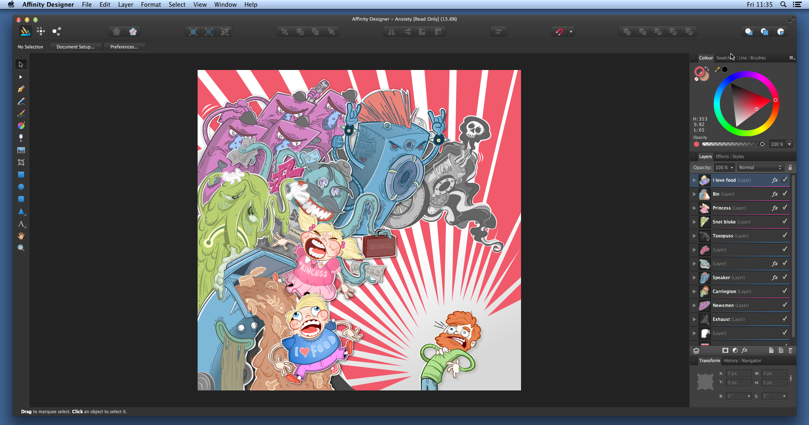

Рабочая область предназначена для упрощения процесса рисования и предоставляет доступ ко всем необходимым инструментам. Если вы ранее работали с приложениями для графического дизайна, то многие команды и функции будут вам знакомы.
В каждом активном режиме Affinity Designer имеется собственный макет рабочей области, свои инструменты и панели. Их можно увидеть после выбора конкретного режима. Но основная концепция рабочей области одинакова во всех режимах.

Представление документа по умолчанию — это страница, на которой работает пользователь. При использовании монтажных областей в представлении документа отображаются монтажные области на панели вставки.
В строке меню отображаются команды меню и команды определенного режима, в котором пользователь работает в настоящий момент. Меню ярлыков предназначено для быстрого доступа к командам, которые также представлены в стандартных меню.
На этой панели представлены режимы, которые можно выбрать в настоящий момент в Affinity Designer. Значок активного режима выделен яркими цветами.
На панели инструментов представлен ряд наиболее часто используемых команд и функций активного режима. Как и меню, она также полностью настраиваемая.
На контекстной панели инструментов находятся команды и функции, характерные для активного инструмента.
На панели «Инструменты» представлены инструменты, которые могут понадобиться во время работы над проектами. Содержащиеся на панели инструменты меняются в зависимости от режима, в котором пользователь работает в настоящий момент.
На этих панелях представлены параметры для работы с композицией документа и активным инструментом. Некоторые панели могут изменяться в зависимости от режима, в котором пользователь работает в настоящий момент. Панели могут быть закреплены или свободно перемещаться в зависимости от установок пользователя. Вы также можете настраивать параметры их макетов.
В строке состояния, расположенной в нижней части представления активного документа, выводится разная полезная информация, например подсказки и комбинации клавиш для активного инструмента или операции.